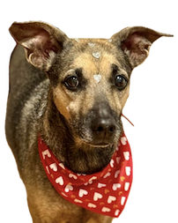

Dashboard PetFriendly
Encontre locais pet friendly próximos com rota e distância.
ENCONTRAR O LUGAR PERFEITO PARA CURTIR COM SEU MELHOR AMIGO PELUDO FICOU MAIS FÁCIL DO QUE NUNCA! NOSSA API CONECTA VOCÊ AOS MELHORES RESTAURANTES, PARQUES E HOTÉIS QUE DIZEM “SIM!” PARA OS PETS. SEJA PARA UM CAFÉ À TARDE OU UMA VIAGEM INESQUECÍVEL, TEMOS OS DADOS QUE MAPEIAM A FELICIDADE CANINA 🐕 (E FELINA 🐈) PERTO DE VOCÊ.
LUGARES PRÓXIMOS (ordenado por relevância)
🌦 CLIMA: CHOVENDO GATOS E CACHORROS? OU DÁ PRA DAR UMA VOLTINHA?
Temperatura ☀️
—
Probabilidade de chuva 🌧
—
Umidade Relativa
—
FAÇA SEU EASY LOGIN – GUARDE SEUS FAVORITOS E RECEBA DICAS PARA O SEU PET!
Encontrar o lugar perfeito para curtir com seu melhor amigo peludo ficou mais fácil do que nunca!
